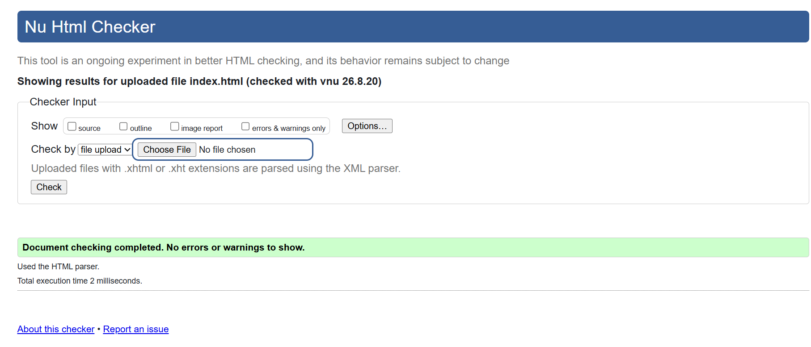
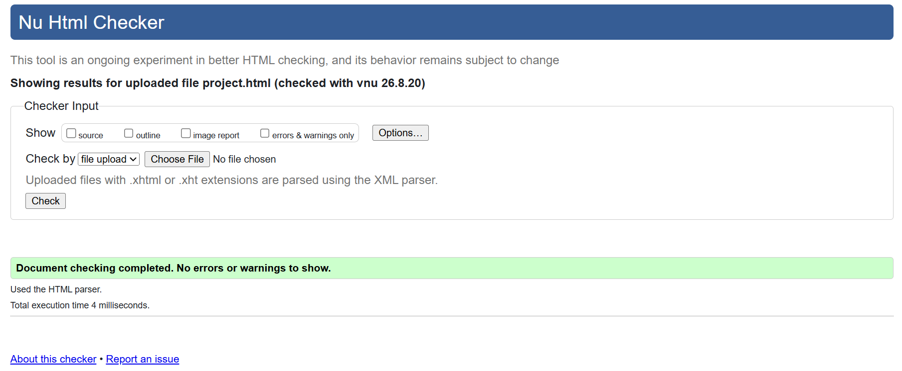
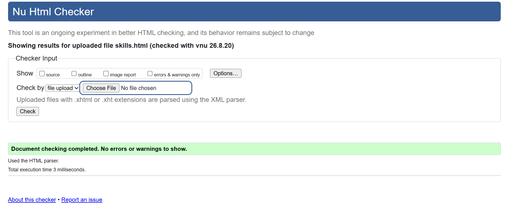
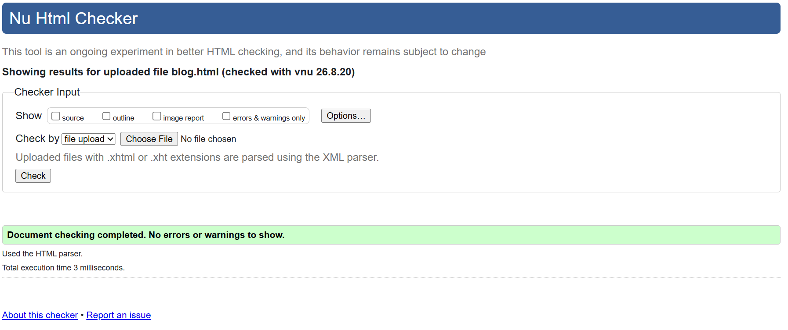
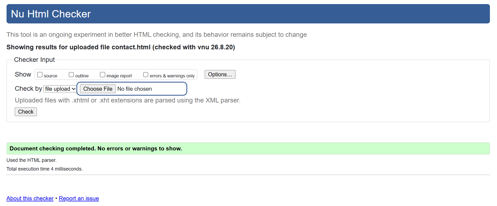
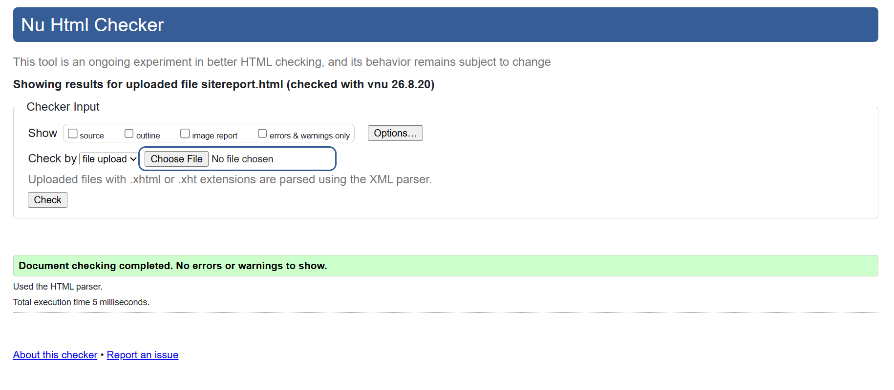

MY WEB DEVELOPMENT JOURNEY
Site Report
My experience of learning web development and creating my portfolio website.
My Experience
At the beginning of this module, I had only a basic understanding of HTML and CSS. As I practised, I became more comfortable creating pages and organising content. I learned how to use headings, links, images, lists, tables and forms correctly.
CSS was more challenging because I had to understand spacing, layouts and responsive design. I used Grid, Flexbox and media queries to make the website work on different screen sizes. I also learned how important semantic elements such as nav, header, main and footer are when structuring a website.
Debugging was one of the harder parts of the project. Sometimes a small change affected another part of the page, so I had to check my code and fix one problem at a time. Using Git and GitHub also helped me keep track of my changes and development progress.
Design Decisions
I wanted my portfolio to be simple and easy to read. I used Arial because it is clear and familiar, and I used a small amount of purple as an accent colour. I kept one shared CSS file for all pages so that the website has a consistent design.
Reflection
Overall, CSY1063 has made me more confident with web development. I learned that building a website is not only about appearance. Structure, responsiveness, testing and debugging are also important. I still have more to learn, especially about JavaScript and more advanced web development, but I feel that this project has given me a good starting point.
Validation
I checked every page of my website using the W3C Nu Html Checker . All six pages passed with no errors or warnings.

Home (index.html)

Projects (project.html)

Skills (skills.html)

Blog (blog.html)

Contact (contact.html)

Site Report (sitereport.html)
Video Demonstration
My video demonstrates each page of the website and explains my design and CSS choices.